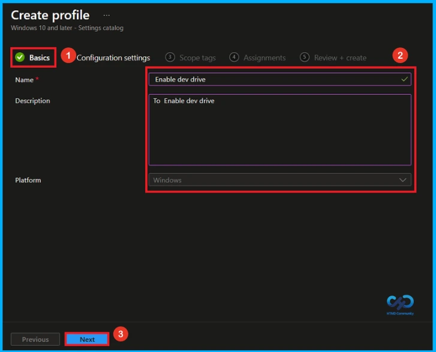
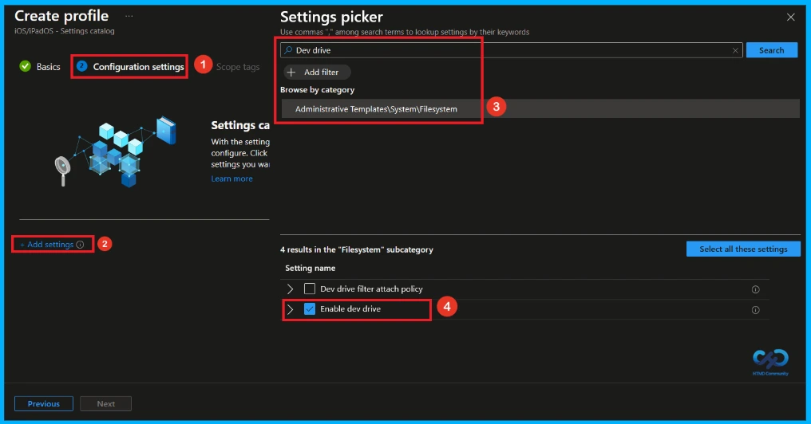
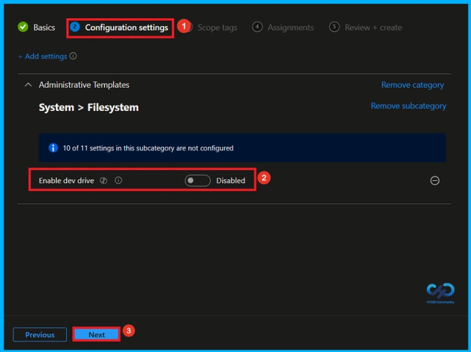
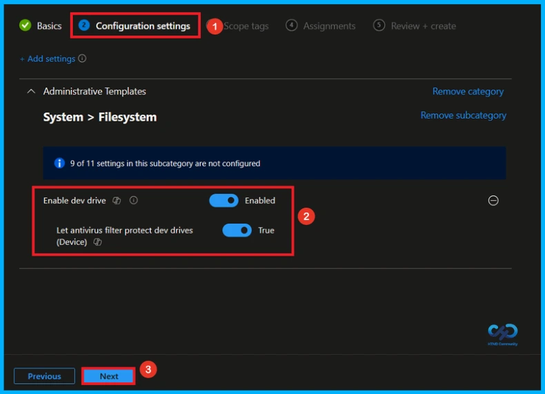
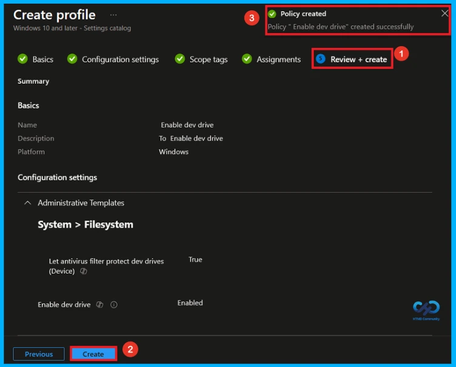
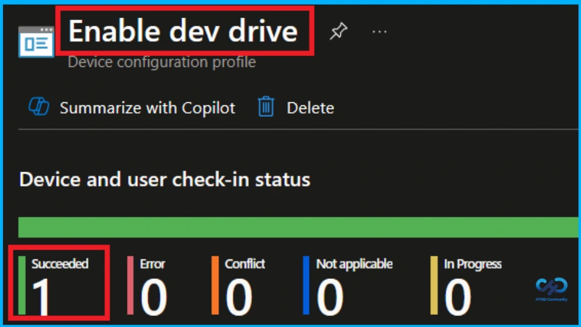
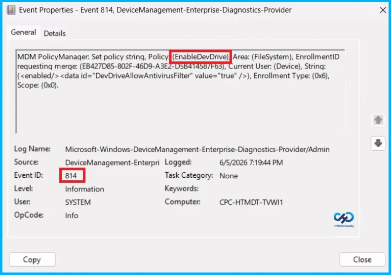
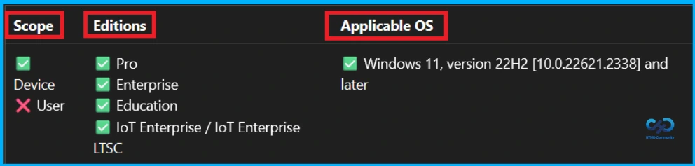
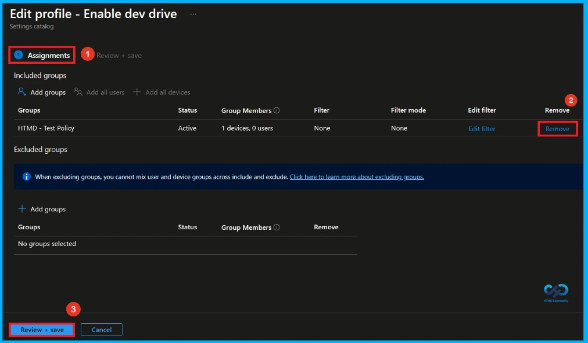
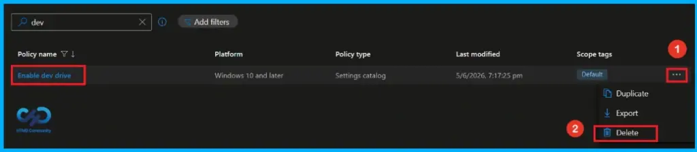

Key Takeaways
- Dev Drive is designed to improve performance for developers.
- Admins can manage which filters are used on the drive.
- If disabled, no new Dev Drives can be created, and existing ones become regular drives.
- A restart is required for changes to take effect.
Hey, let’s discuss about How to Configure Developer Volumes in Windows using Microsoft Intune. A Developer Volume (Dev Drive) is a storage volume optimized for development workloads and improved performance. Administrators can configure which file system filters, such as antivirus filters, are attached to the volume.
Table of Contents
How to Configure Developer Volumes in Windows using Microsoft Intune
If this setting is disabled, new Developer Volumes cannot be created, and existing ones will function as regular volumes. If the setting is not configured, Developer Volumes are enabled by default, and local administrators can choose whether antivirus filters are attached. A system reboot is required for any changes to take effect.
How to Create a Policy
To create a policy, go to Microsoft Intune Admin center. Click on the Devices, then Configuration and choose New Policy from down arrow of the Create option.

Creating the Profile
This is the next step you need to take for Policy Creation. When creating a profile, you must select the platform and profile type. Here, I would like to configure the policy for Windows 10 and later Platforms and the Settings catalog profile. Then click on the Create button.

Define the Policy Name and Description
To configure a policy in Intune, start with the Basics step, enter a clear and meaningful name such as Enable dev drive and provide a short description (such as “To Enable dev drive“). Then click Next to continue.

Configure Dev Drive
In the Configuration settings, you can see the Add settings button. Click the Add Settings to browse or search the catalog for the settings you want to configure. In the Settings picker, you can search for the Settings quickly. Here, I choose the Administrative Templates\System\Filesystem category, select Enable dev drive to configure it, and then close the Settings Picker window.

Disable Dev Drive
Once you have selected Enable dev drive and closed the Settings picker. You will see it on the Configuration page. This setting is disabled by default. If you want to continue with this you can click on the next.

Enable Dev Drive
If we enable or configure this policy, you can allow the dev drive policy by toggling the switch from left to right.Then, you can click the Next button to proceed.

Scope tags are used to control which administrators can see and manage this policy in the Intune admin center. In the Scope tags section, you can assign one or more scope tags to the policy so that only specific IT teams or administrators have access to it. To add a scope tag, click Select scope tags, choose the required tag, and then click Next.

Assign the Policy to Groups
In the Assignments section, click Add groups under Included groups and select the required user or device groups. Assigning the policy ensures it is applied only to the intended users or devices, such as test groups or production environments. Then click on the Next.

Review and Deploy the Policy
At the final Review + Create step, we see a summary of all configured settings for the new profile; after reviewing the details and making any necessary changes by clicking Previous. We click Create to finish, and a notification confirms that the “Enable dev drive created successfully”.

Monitor Policy Deployment Status
To check whether the policy is successfully applied, sign in to the Microsoft Intune admin center and go to Devices > Configuration profiles. Select the Enable dev drive policy from the list. This opens the policy overview page, where you can see a quick summary of its deployment status.

Client Side Verification
To confirm if a policy has been applied, use the Event Viewer on the client device. Go to Applications and Services Logs > Microsoft > Windows > Device Management > Enterprise Diagnostic Provider > Admin. Use the Filter Current Log option and search for Intune event 814.
MDM PolicyManager: Set policy strinq, Policy (EnableDevDrive) Area: (FileSystem), EnrollmentID
requesting merge: (EB427D85-802F-46D9-A3E2-D5B41458/F63), Current User: (Device), String:
(), Enrollment Type: (0x6),Scope: (0x0).

Windows Configuration Service Provider (CSP)
The Policy Configuration Service Provider (CSP) is a feature used by organisations to manage and control settings on Windows 10 and 11 devices.
Description framework properties:
| Value | Description |
|---|---|
| 0(Default) | Disable |
| 1 | Enable |
ADMX mapping:
| Name | Value |
|---|---|
| Name | EnableDevDrive |
| Friendly Name | Enable Dev Drive |
| Location | Computer Configuration |
| Path | System > Filesystem |
| Registry Key Name | System\CurrentControlSet\Policies |
| Registry Value Name | FsEnableDevDrive |
| ADMX File Name | refs.admx |

How to Remove Assigned Group from this Policy
If you want to stop the policy from applying to certain users or devices, you can remove the assigned groups. Go to Devices > Configuration profiles, select the policy, and open Assignments. Under Included groups or Excluded groups, select the group you want to remove and delete it from the assignment list. Once the group is removed, the policy will no longer apply to those users or devices after the next Intune sync.
For detailed information, you can refer to our previous post – Learn How to Delete or Remove App Assignment from Intune using by Step-by-Step Guide.

How to Delete this Policy from Intune
If the policy is no longer required, you can delete it completely from Intune. Navigate to Devices > Configuration profiles, select the policy you want to remove, and click Delete. Confirm the deletion when prompted. Deleting the policy permanently removes it from Intune and stops it from applying to all devices.
For detailed information, you can refer to our previous post – How to Delete Allow Clipboard History Policy in Intune Step by Step Guide.

Need Further Assistance or Have Technical Questions?
Join the LinkedIn Page and Telegram group to get the latest step-by-step guides and news updates. Join our Meetup Page to participate in User group meetings. Also, Join the WhatsApp Community and WhatsApp Channel to get the latest news on Microsoft Technologies. We are there on Reddit as well.
Author
Anoop C Nair has been Microsoft MVP from 2015 onwards for 10 consecutive years! He is a Workplace Solution Architect with more than 22+ years of experience in Workplace technologies. He is also a Blogger, Speaker, and Local User Group Community leader. His primary focus is on Device Management technologies like SCCM and Intune. He writes about technologies like Intune, SCCM, Windows, Cloud PC, Windows, Entra, Microsoft Security, Career, etc